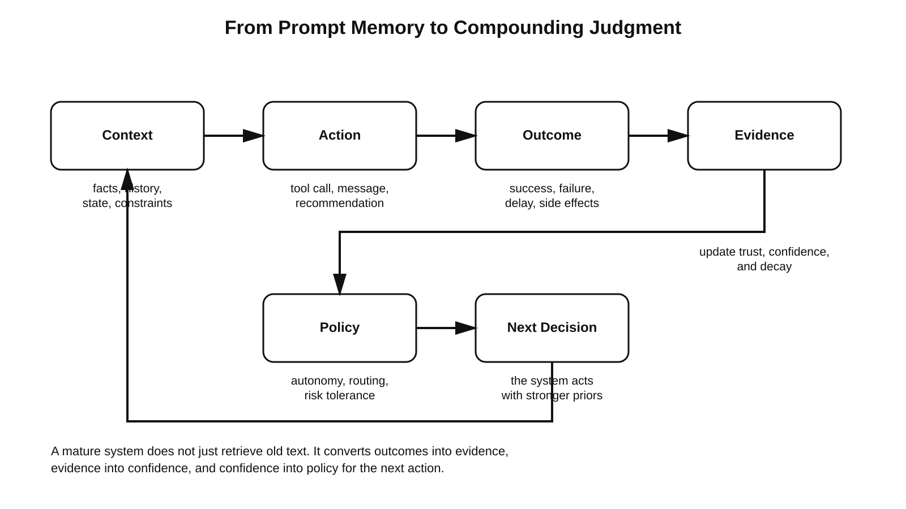

When Machine Judgment Becomes Capital
Source asciidoc: `docs/article/when-machine-judgment-becomes-capital.adoc` = when-machine-judgment-becomes-capital-01 :page-slug: when-machine-judgment-becomes-capital-01
Source asciidoc: `docs/article/when-machine-judgment-becomes-capital-01.adoc` The current wave of AI still encourages a very short-term way of thinking. Teams compare models, benchmark prompt quality, expand context windows, add retrieval, connect tools, and call the result an intelligent system. That stack matters, but it may not be where the most durable advantage will live.
A stronger hypothesis is emerging: models will become replaceable execution layers, while the real strategic asset will be the system that preserves, tests, updates, and compounds machine judgment over time.
Some people describe that direction with phrases such as Accreted Intelligence. The label matters less than the underlying idea. The important shift is from memory as storage to memory as governed experience. Not a pile of transcripts. Not a larger prompt. Not a vector database full of fragments. A system that remembers which decisions worked, under what conditions, with what confidence, and how strongly those patterns should influence the next action.
That distinction is not semantic. It changes how we think about agents, professional leverage, and even organizational capital.

when-machine-judgment-becomes-capital-02
Source asciidoc: `docs/article/when-machine-judgment-becomes-capital-02.adoc` == The Limits of Plain Memory
Most so-called memory layers in AI are still closer to recall systems than to judgment systems. They help a model recover facts, preferences, prior messages, or external documents. That is useful, but it does not automatically produce better decisions.
A long transcript is not wisdom. A vector hit is not judgment. A bigger context window is not experience.
This is exactly why many agent systems still drift, repeat earlier mistakes, or fail to carry forward the one lesson that actually mattered. They can retrieve what happened, yet they often cannot convert what happened into a stronger next decision. Recent surveys and course material on self-improving agents make this point increasingly clear: memory is becoming central not because agents need more text, but because long-running systems need mechanisms that connect past interaction to future behavior in a disciplined way.[1]
This is where the conversation becomes more interesting. The next-generation agent is not just an LLM with tools. It is an LLM-based decision system with a write-manage-read loop for experience, and with rules for what should be reinforced, decayed, ignored, escalated, or overridden.[2] = when-machine-judgment-becomes-capital-03 :page-slug: when-machine-judgment-becomes-capital-03
Source asciidoc: `docs/article/when-machine-judgment-becomes-capital-03.adoc` == From Stored Context to Verified Judgment
The deeper move is to stop treating persistence as transcript retention and start treating it as evidence-weighted judgment.
In practical terms, that means a system should preserve more than a summary of what was said. It should preserve claims like these:
-
In this class of sales conversations, opening with proof before price improves reply quality.
-
In this class of support tickets, escalating early reduces total time to resolution.
-
In this account profile, a direct call is better than a long email sequence.
-
In this coding environment, this verification path is more reliable than that one.
Now the system is not merely remembering facts. It is storing and updating judgments about action quality.
That is much closer to how valuable human expertise actually works. The best operators are rarely superior because they can recall more raw information than everyone else. They are superior because they have compressed repeated feedback into high-quality action bias. They know what to try first, what to distrust, what to avoid, and when to slow down.
A machine system that can accumulate this kind of action-shaping experience begins to resemble a professional asset, not just a software feature. = when-machine-judgment-becomes-capital-04 :page-slug: when-machine-judgment-becomes-capital-04
Source asciidoc: `docs/article/when-machine-judgment-becomes-capital-04.adoc` == Why Bayesian Updating Fits the Problem
One of the most useful ideas in this space is to treat judgment as something that should grow or weaken with evidence. That is why Bayesian logic is attractive here. Not because it magically solves intelligence, but because it gives a disciplined way to update confidence as outcomes arrive.
A Beta-posterior style mechanism is especially intuitive for operational systems. Successful outcomes add weight in one direction. Failures add weight in another. Confidence is not declared once; it is earned through repeated exposure to evidence. And importantly, stale priors can be decayed if they stop receiving confirmation.

This matters because many real workflows are neither static nor fully deterministic. A playbook that worked last quarter may become mediocre under new pricing, different competition, new regulation, or a changing customer mix. A usable judgment layer therefore cannot behave like an archive. It must behave like a living confidence system.
Research on Bayesian confidence and evidence accumulation supports this broader framing: confidence is often best modeled not as a mood attached to a decision, but as a function of accumulated evidence and the path by which that evidence was gathered.[3] For AI systems, the implication is straightforward. Confidence should become a control surface. It should influence autonomy, escalation, retrieval breadth, model routing, and willingness to explore alternatives. = when-machine-judgment-becomes-capital-05 :page-slug: when-machine-judgment-becomes-capital-05
Source asciidoc: `docs/article/when-machine-judgment-becomes-capital-05.adoc` == Why This Is Bigger Than “Agent Memory”
If this argument is right, then the real value is not in memory alone. It is in the conversion pipeline:
observation → action → outcome → update → changed future policy.
That pipeline is what turns interaction history into compounding machine judgment.
Recent work in agent memory is moving in exactly this direction. MemoryBank focused on long-term memory and selective forgetting.[4] ReasoningBank goes further by distilling reusable strategies from successful and failed trajectories and using them to improve future behavior, explicitly framing memory-driven experience scaling as a new dimension for agent capability.[5] Even the language in newer surveys is evolving from simple storage metaphors toward more dynamic concepts such as experience, control policy, and memory lifecycle.
That evolution matters. It suggests that the field is slowly realizing that persistence is not valuable merely because it extends context. It is valuable because it governs adaptation. = when-machine-judgment-becomes-capital-06 :page-slug: when-machine-judgment-becomes-capital-06
Source asciidoc: `docs/article/when-machine-judgment-becomes-capital-06.adoc` == Organizational Memory, Revisited for AI
This also reconnects AI to a much older management question: what exactly is organizational memory?
Long before LLM agents existed, management research treated organizational memory as a real source of institutional capability. It was not just a database of facts. It included acquisition, retention, maintenance, retrieval, and forgetting, all of which shaped future action.[6] Related work on transactive memory systems showed that teams become more effective not merely when they know more, but when they know who knows what and how to coordinate around distributed expertise.[7]
AI reopens this literature in a new form. A mature agent instance can act as a compressed operating layer for specific judgments that once lived only inside people or teams. That does not mean replacing the expert. It means making the expert’s validated patterns more durable, more replayable, and more available at the point of action.
In that sense, a well-governed judgment layer behaves like institutional capital. It is built over time, can survive personnel turnover, and becomes more valuable when it is regularly tested against outcomes instead of being frozen as doctrine. = when-machine-judgment-becomes-capital-07 :page-slug: when-machine-judgment-becomes-capital-07
Source asciidoc: `docs/article/when-machine-judgment-becomes-capital-07.adoc` == Where This Approach Creates Real Economic Value
The strongest applications are not everywhere. They are concentrated in workflows with three characteristics.
First, the system faces repeated decisions rather than one-off puzzles. Second, downstream outcomes are observable, even if imperfectly. Third, good judgment is expensive because it is currently trapped inside a small number of strong operators.
That is why the most promising zones are sales qualification, account expansion, recruiting, underwriting, support triage, collections, procurement, operations, and other expert workflows where “what usually works here” has large economic consequences.
In those environments, the prize is not simply automation. The prize is compounded decision quality. An ordinary AI stack may help a team move faster. A judgment-compounding stack may help a team become systematically harder to replace.
That is a very different strategic claim. = when-machine-judgment-becomes-capital-08 :page-slug: when-machine-judgment-becomes-capital-08
Source asciidoc: `docs/article/when-machine-judgment-becomes-capital-08.adoc` == The Risks: Local Maxima, Bias, and False Confidence
This idea becomes dangerous if it is oversold.
Not every workflow yields clean feedback. Not every success should be credited to the last action taken. Not every environment is stable enough for confident priors. A system can easily overfit to a local pattern, inherit the blind spots of a star employee, or become too certain in a regime that has already changed.
That is why a serious judgment layer needs more than persistence. It needs governance.
At minimum, that means:
-
explicit confidence tracking;
-
decay or forgetting rules for stale judgments;
-
environment tagging so lessons are not applied outside their valid context;
-
human override for high-risk decisions;
-
auditability of which evidence shaped which recommendation;
-
exploration budgets so the system does not collapse into one narrow local optimum.
Without those controls, “accumulated intelligence” can become accumulated bias with a dashboard. = when-machine-judgment-becomes-capital-09 :page-slug: when-machine-judgment-becomes-capital-09
Source asciidoc: `docs/article/when-machine-judgment-becomes-capital-09.adoc` == Why the Moat May Shift Away from the Model
The most important strategic conclusion is simple.
If frontier models keep improving and diffusing, then raw model access will become a weaker moat. Cost, latency, personality, and reasoning style will still matter, but they will matter less than many founders hope. The more durable advantage may sit one layer above the model: in the persistent judgment system that survives model swaps and grows more valuable with every verified cycle.

That is a more defensible position because it is closer to how firms actually build hard-to-copy capability. They do not win only because they purchased a tool. They win because they integrated a tool into routines, feedback loops, expertise, and accumulated operational learning.
The same may prove true for AI. The winners may not be the teams with access to the newest model on day one. They may be the teams that best compound machine judgment on day two hundred. Unresolved include directive in modules/ROOT/pages/article/when-machine-judgment-becomes-capital.adoc - include::when-machine-judgment-becomes-capital-10.adoc[]